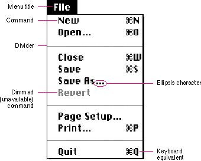

|
Menu ElementsMenu elements include words or icons that name menu items, keyboard equivalents, dividers, and marks. Menu items usually apply to the current selection, although some may apply to the whole document or window. Figure 4-8 shows an enlarged menu and points out its features. Subtopics |